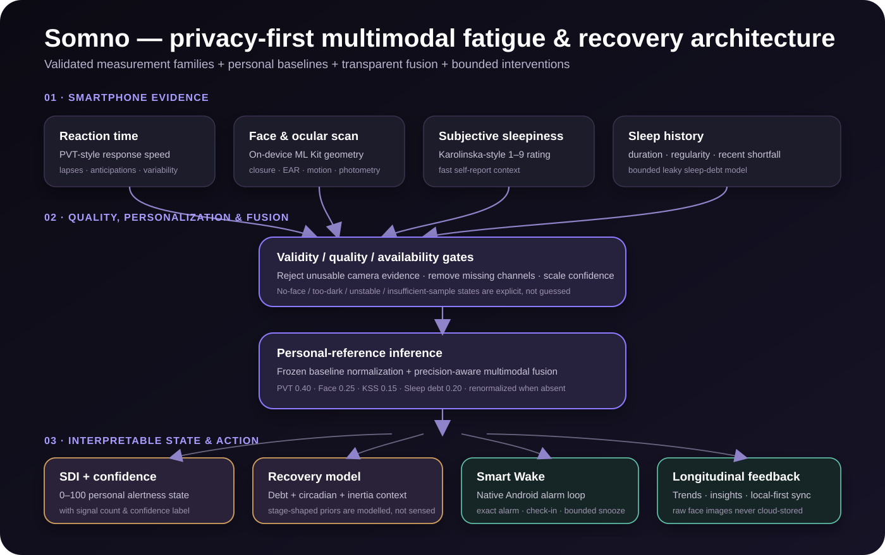

01
Psychomotor vigilance
A short reaction-time probe captures response speed, lapses, false starts, variability and time-on-task behavior.
Somno turns reaction time, on-device facial and ocular signals, subjective sleepiness and sleep history into a personal view of fatigue, recovery and readiness.


How Somno works
Somno treats fatigue as a changing within-person state instead of reducing sleep to a single duration metric.
A short reaction-time probe captures response speed, lapses, false starts, variability and time-on-task behavior.
On-device computer vision extracts temporal, ocular, motion and photometric features while keeping raw frames on the phone.
A Karolinska Sleepiness Scale input adds the user's perceived state as an independent channel instead of treating it as ground truth.
Recent duration, regularity and accumulated shortfall provide longitudinal context for the current measurement.
System architecture
Signal validity is checked before personalization and fusion. Missing channels are reweighted dynamically, while the resulting state feeds recovery modelling, Smart Wake and longitudinal feedback.
Read the technical architecture →
Scientific foundation
Somno combines measurement families used across vigilance, sleepiness, fatigue and human-performance research, then interprets them against the user's own baseline.
Psychomotor vigilance is widely used to quantify performance changes associated with sleep loss. Somno captures response speed, lapses, anticipations and variability in a compact mobile probe.
Basner, Mollicone & Dinges, 2011KSS provides a fast subjective view of sleepiness and has demonstrated relationships with behavioral and EEG indicators. Somno treats it as one channel inside a broader multimodal estimate.
Kaida et al., 2006Eyelid closure and ocular behavior have a long research history in fatigue and vigilance monitoring. Somno derives quality-scored ocular and temporal features on-device.
Dinges et al., NHTSASleep loss affects cognitive and physical performance, while sleep-focused recovery strategies can support readiness. Somno makes those recovery patterns visible in a personal timeline.
Gong et al., 2024Transparent fusion
Somno uses explicit signal weights and personal-reference normalization rather than an opaque single-output model.
SDI = clamp(50 + 10 × weighted personal-reference z-score, 0, 100)
From measurement to action
Somno connects state estimation to recovery planning, history and a native Android alarm workflow.
See the state estimate, confidence and strongest contributing signals instead of a black-box number.
Track sleep debt, recent patterns and recovery context across days rather than treating each check-in in isolation.
A custom Kotlin alarm layer handles exact scheduling, wake flows, bounded snooze logic and reboot re-arming.

Impact
The same need for better fatigue awareness appears across study, sport, transport and irregular work.
Track accumulating sleep loss during exams and compare daily alertness with a stable personal reference.
Bring sleep shortfall, reaction-time change and perceived fatigue into a single recovery view around training, travel and competition.
Use a fast pre-task fatigue check to make changes in vigilance and recent sleep shortfall more visible before demanding journeys.
Observe alertness changes across irregular schedules, repeated short sleep and difficult circadian windows.
Quantify the effect of disrupted nights and recovery across rotating or unpredictable duty cycles.
Explore a privacy-first mobile architecture for repeated multimodal fatigue and human-performance measurement.
Privacy by architecture
Somno processes camera frames transiently on-device. The scoring pipeline works with derived numeric features rather than uploading a stream of face images to a server.
Engineering
The application combines a typed React Native layer, on-device vision, local persistence, optional cloud sync and a custom native Android alarm module.
Somno v27
Explore the source, inspect the models, or install the Android build directly from GitHub.